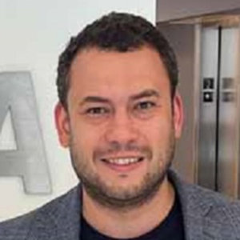

Anderson Nascimento
UnB · UW-Tacoma · Visa Research
Dr. Anderson C. A. Nascimento is an information theory and privacy expert with almost two decades of postdoctoral experience. His career milestones include being an endowed professor and Computer Science chair at the University of Washington (Tacoma Campus), a permanent member of the Cryptography Lab at Nippon Telegraph and Telecom, a research scientist at Meta, and a professor with the University of Brasilia, Brazil. Anderson is a University of Tokyo Ph.D. graduate (2004), and he specializes in privacy-preserving machine learning, developing novel techniques for various domains. He has won international research competitions, including the iDash competition for privacy-preserving genomic data, and he took second place in the PETS prize organized by the US and UK governments. He has 100+ publications, edited four books, supervised 26 theses and dissertations, and served as a panelist or reviewer for the National Science Foundation, The National Council of Research and Development of Brazil, and the European Science Foundation. He has also presented expert testimony to the Brazilian Supreme Court on privacy issues. Dr. Nascimento speaks English, Portuguese, Spanish, and Japanese.